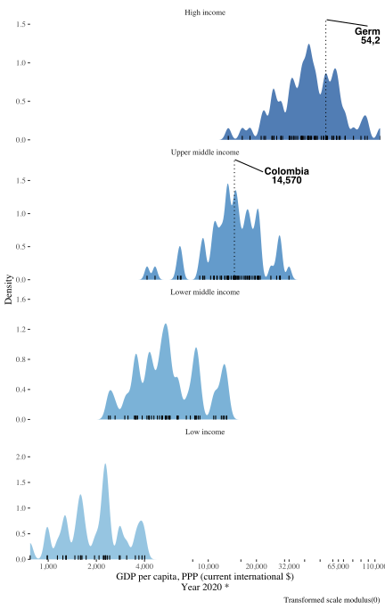
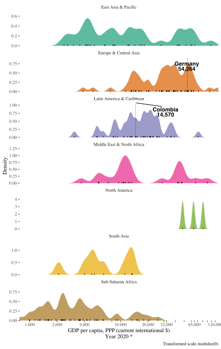
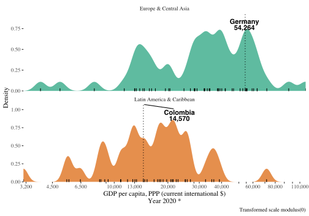

This document describes a few features of the package and documents some admittedly controversial design decisions.
Some of the plots have facets and you can configure whether they group the data by geographical regions or income groups. Simply pass unquoted region or income to the facets argument.
plot_dist_wdi_ind("NY.GDP.PCAP.PP.CD", facets = income, p = 0)
plot_dist_wdi_ind("NY.GDP.PCAP.PP.CD", facets = region, p = 0)
By default, wdiquickplots shows the data for all countries available. But it provides three ways to subset the countries to include in the plot. There are three arguments for this:
country let’s you arbitrarily select countries (1…*). We pass this argument directly to WDI, hence you need to use ISO-2 character code to indicate the countries (see ?WDI::WDI()). As in WDI, this defaults to “all”.regions let’s you select a group of countries, indicating World Bank regions. wdiquickplots:::regions
income_groups let’s you select a group of countries, indicating World Bank’s income classification. wdiquickplots:::income
plot_dist_wdi_ind(
indicator = "NY.GDP.PCAP.PP.CD", facets = region, p = 0,
regions = c("Europe & Central Asia", "Latin America & Caribbean")
)
In all plotting functions you can specify the period to download the data (start and end year). However, some plots do not show the time series but only one point in time per country. In those cases, the default is to keep the latest available data point for each country.
This is to try to keep as many countries as possible in the data to plot. So, instead of dropping countries with missing data for the last year, we would rather keep them and tolerate them with somewhat older data.
The implication is that the plot can contain non-comparable data, and end-up mixing different years for different countries.
Of course, that can be controversial and certainly it is not ideal. To this, we would say a couple of things:
wdiquickplots to show the same year for all countries. To do this, simply set start and end to the same value. Thus, you ensure comparability. Just keep in mind that the countries without data for that year will be simply dropped and not shown in the plot.Main features have been described already in this site. And some of the plots allow for some more customization. But not much really. For example, the bar plot allows the user to customize the colors (see ?plot_bar_wdi_ind) but you cannot turn it into a lollipop plot. In addition, you get the plot objects prepared by wdiquickplots (e.g. ggplot2 object) and you can go wild (e.g. override scale_fill_brewer to change color palette, you can even remove or change facets).
And although you can do that, it is certainly not in line with the spirit of this package. Quick plots!, if you have to fiddle too long with arguments and trying to change too many things on the plot, it is not a quick plot anymore. That would also indicate you need something different than the prefabricated plots in this package. In those cases, you are probably better off using directly WDI to get the data and make your own plot.